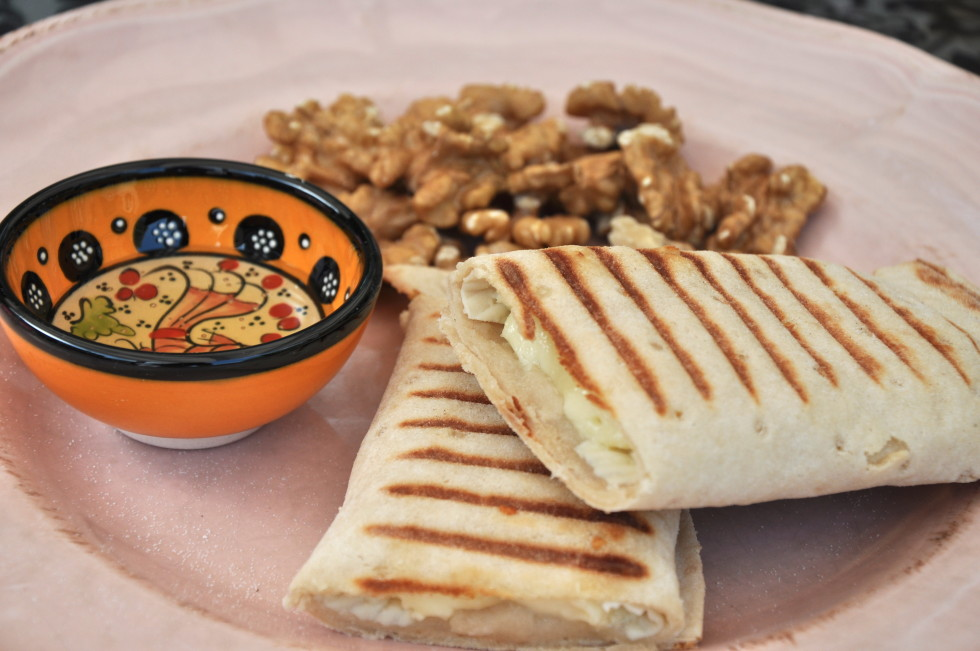
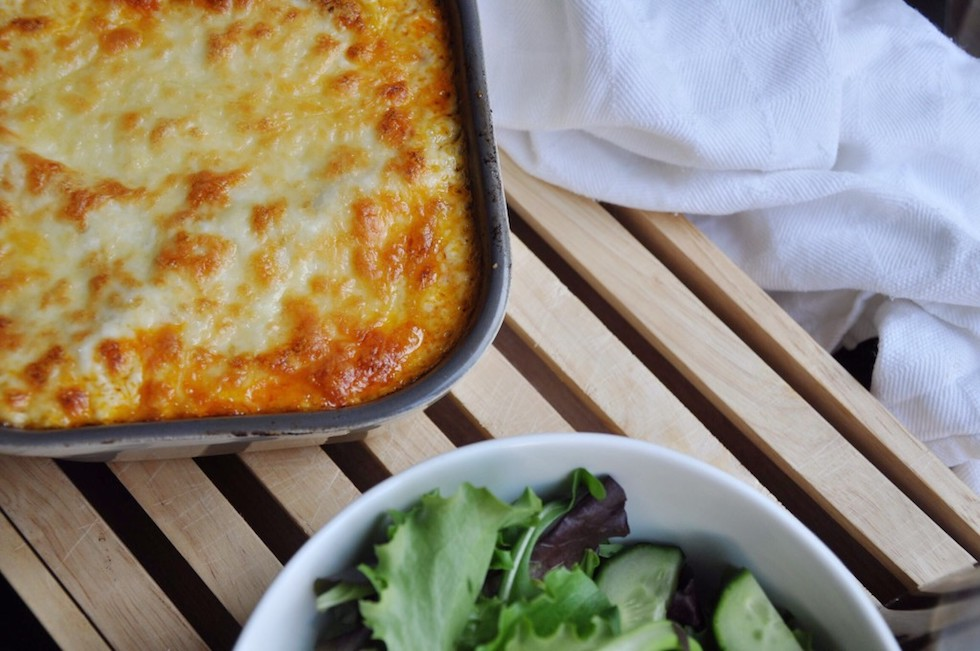

Glutenvrije recepten: makkelijk, snel & glutenvrij
Al mijn glutenvrije recepten van de afgelopen jaren heb ik verzameld op deze website. De recepten zijn ingedeeld in categorieën zodat je makkelijk het recept kan vinden wat je zoekt. klik hieronder op een categorie om de recepten te bekijken.


Warme broodjes
Koude broodjes
Soepen
